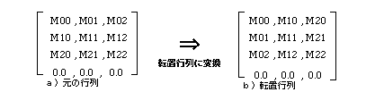

Return to previous page | Return to menu | Go to next page
void
Matrix function
Transpose the current matrix
void slTransposeMatrix()
None
Replace the current matrix with a transposed matrix.
The translation part will be 0.
None
A transposed matrix is a matrix expressed as shown below.

slTransposeMatrix